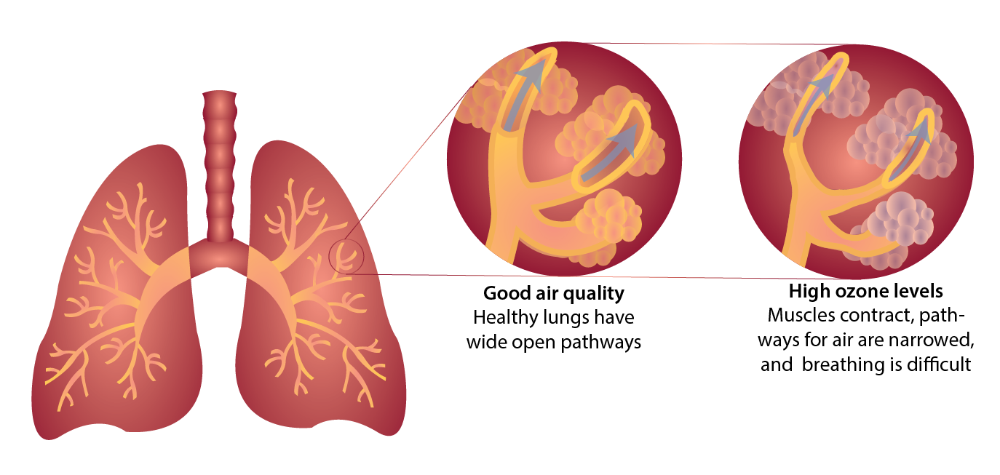

Air pollution affects all things. It is harmful to our health, and it impacts the environment - reducing visibility and blocking sunlight, causing acid rain, and harming forests, wildlife, and agriculture. Greenhouse gas pollution, the cause of climate change, affects the entire planet.
According to the World Health Organization, an estimated seven million people die each year from air pollution. More than 4,000 people died in just a few months due to a severe smog event that occurred in London in 1952. Ground-level ozone causes muscles in the lungs to contract, making it difficult to breathe. Exposure to high ozone levels can cause sore throat, coughing, lung inflammation, and permanent lung damage.
Wildlife can experience many of the same negative health effects of air pollution that humans do. Damage to respiratory systems is the most common effect on animals, but neurological problems and skin irritations are also common.
Plants and crops grow less when exposed to long term air pollution. Ozone pollution harms plants by damaging structures called stomata, which are tiny pores on the underside of leaves that allow the plant to "breathe." Some types of plants can protect themselves by temporarily closing their stomata or producing antioxidants, but others are particularly sensitive to damage.
Greenhouse gas pollution is causing climate change. As a result, ecosystems are changing faster than plants and animals can adapt, and many species are going extinct. Marine ecosystems are vulnerable to ocean acidification caused when carbon dioxide emitted into the atmosphere is dissolved in seawater. Ocean acidification makes it difficult for many marine species to grow shells and skeletons.
Melting ice sheets, warming oceans, and extreme weather conditions are examples of how climate changes caused by greenhouse gas pollution threaten ecosystems across the Earth. In many cases, the decline of one or a few species due to air pollution can topple the balance of entire ecosystems.